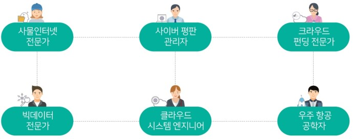

- 로봇
- 바이오
- 연결
- 안전
- 건강
연결
사물 인터넷 전문가: 모든 사물에 인터넷을 연결하여 새로운 가치나 서비스를 창출
사이버 평판 관리자: 온라인 세계에서 좋은 이미지를 구축하고 문제를 해결
크라우드 펀딩 전문가: 크라우드 펀딩 중개를 담당하는 금융 투자업자
빅 데이터 전문가: 대량의 빅 데이터로 사람들의 행동이나 시장의 변화 등을 분석하는데 도움이 되는 정보를 제공
클라우드 시스템 엔지니어: 인터넷의 서버에 각종 컴퓨터 프로그램을 올려 놓고 여러 이용자들이 인터넷에 접속하여 데이터를 저장하고 처리할 수 있는 기술을 개발
항공우주공학자: 하늘을 무대로 항공기, 우주선, 로켓, 인공위성을 연구하고 개발
